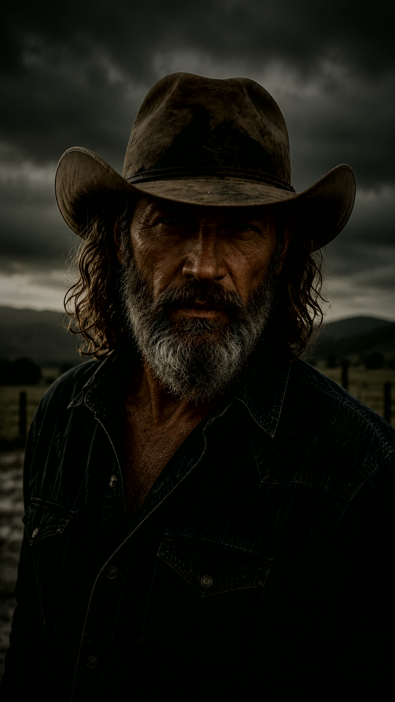

The Story
Songs for what the night remembers
Dark Country Love was born where love, loss, faith, and the open road collide. It tells the stories of people who loved hard, lost deeply, and kept moving even when part of them stayed behind.
Built around dark country, Southern rock, and cinematic storytelling, every song feels like a page torn from someone's life: hospital rooms at midnight, empty passenger seats, worn wedding rings, muddy backroads, unanswered prayers, and memories that refuse to disappear.
The bull skull represents strength after loss: weathered, scarred, but still standing.
Dark Country Love isn't just country music. It's music for the things we never got to say, the people we'll never stop loving, and the stories that stay with us long after the last note fades.